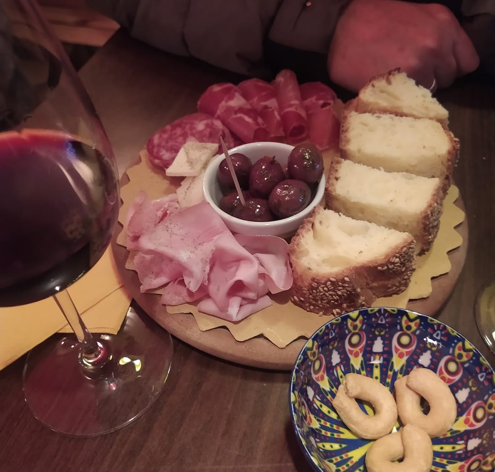
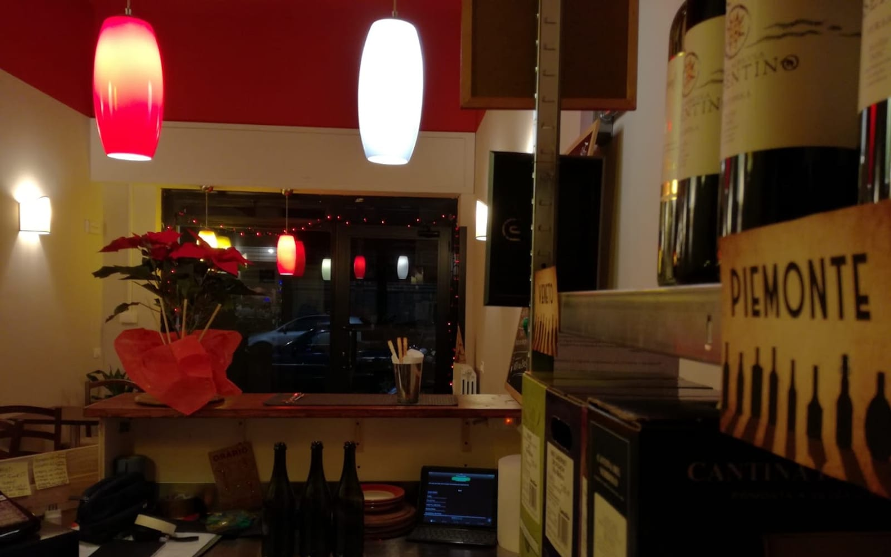
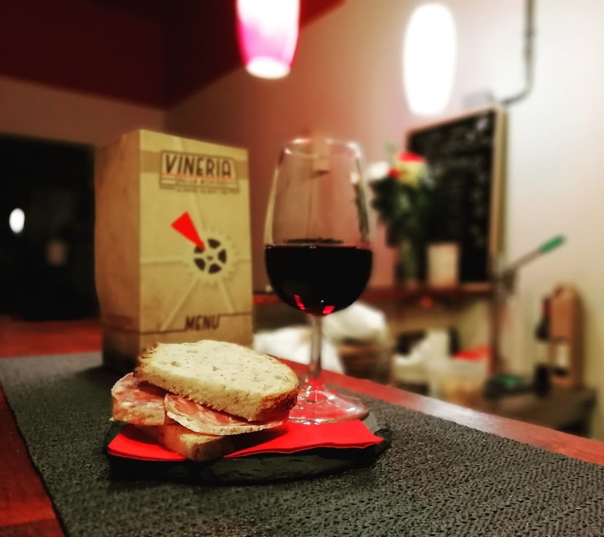
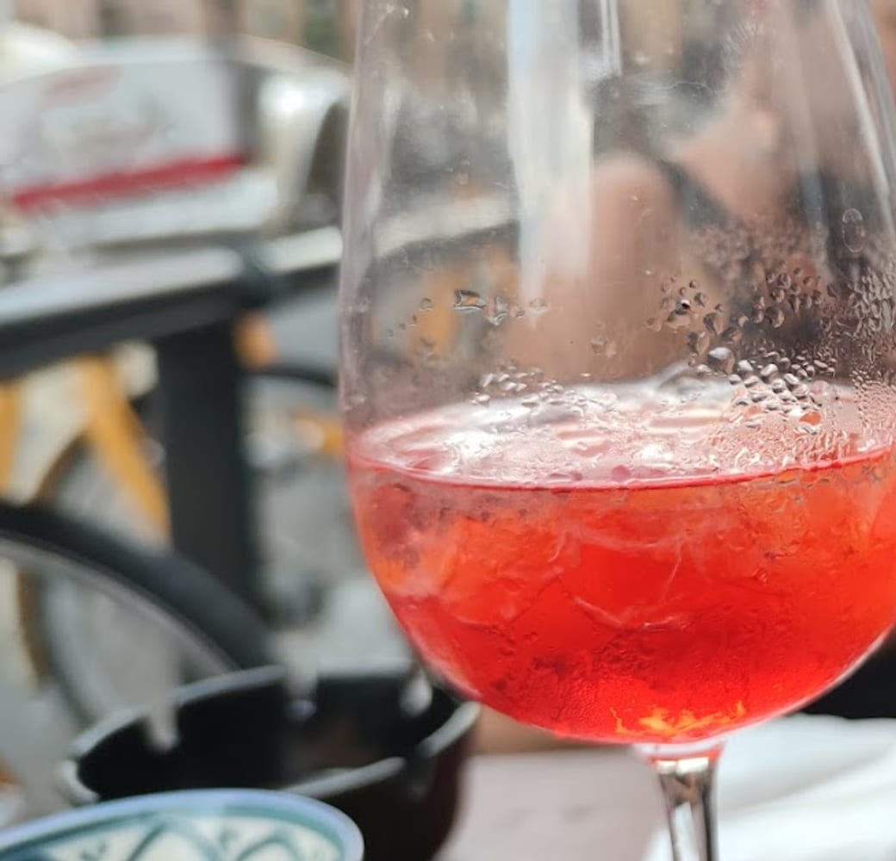
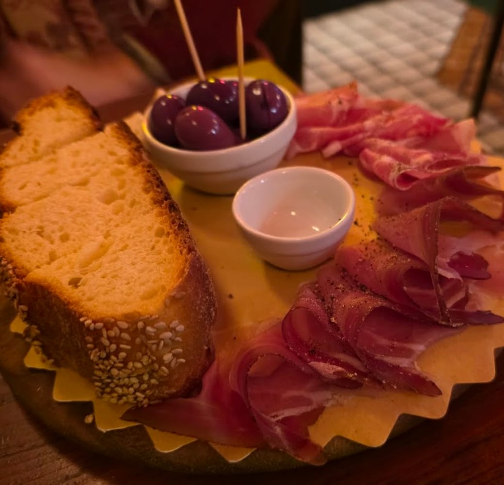
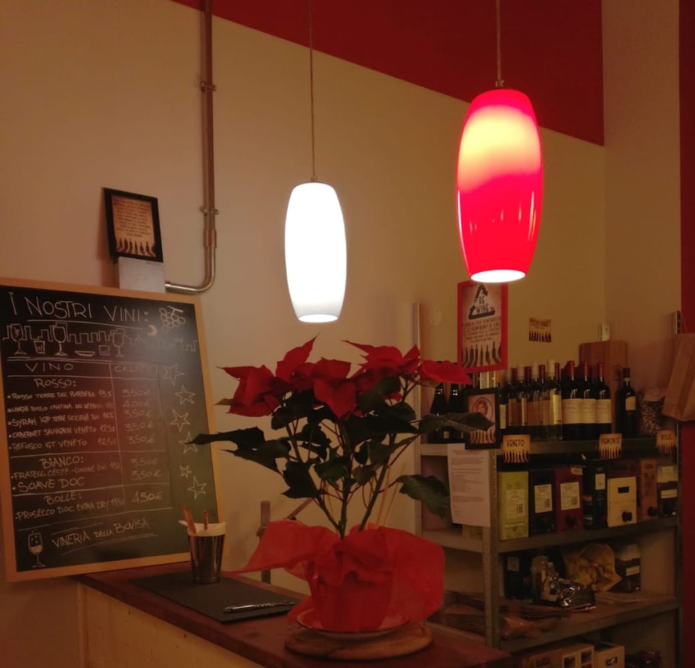
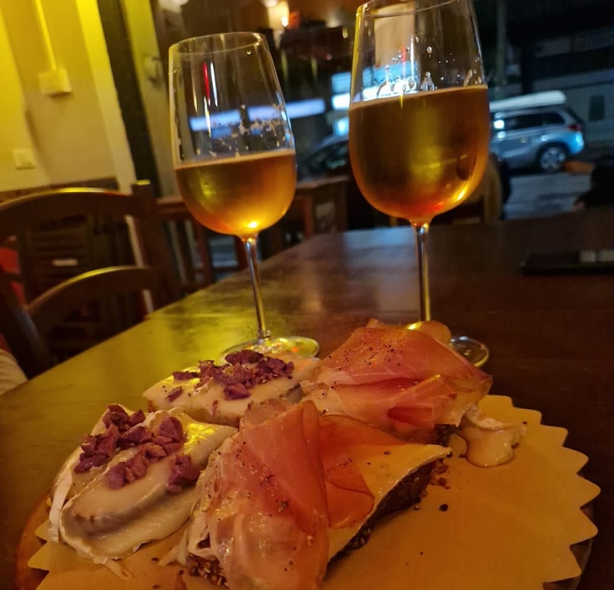
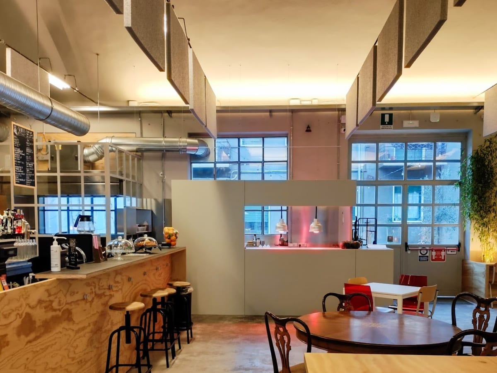

Il Tagliere Vineria
Salumi e formaggi scelti, olive, taralli e la mostarda giusta. Da dividere in due, o in quattro.
Enoteca · Wine bar · Bovisa
La vineria di quartiere di Bovisa: taglieri, pane e salame, spritz e vini per tutti i gusti. E l'oste che ti racconta cosa versarti nel bicchiere.

Chi ti accoglie
Alla Vineria il bello è il banco: ci si ferma, si scambiano «due chiacchiere e un sorriso» — parole loro — e nel frattempo l'oste ti mette in mano il bicchiere giusto. Non serve intendersi di vino: basta avere voglia di stare bene.

Al banco
Le cose che contano, fatte bene: il tagliere, il pane e salame, gli stuzzichini e lo spritz. Da accompagnare, mai da complicare.

Salumi e formaggi scelti, olive, taralli e la mostarda giusta. Da dividere in due, o in quattro.
Il classico che non delude: pane buono, salame come si deve. L'aperitivo essenziale.

Spritz Campari o Aperol, crostini e stuzzichini caldi. L'ora giusta per fermarsi dopo il lavoro.

Croccanti, generosi, con salumi e formaggi freschi. Perfetti col calice della casa.

La carta
Una carta che gira l'Italia, dal Piemonte in giù, con un occhio ai piccoli produttori e ai vini naturali — come il Rosato di Dario Ceste. Al calice o in bottiglia, e la puoi anche portare a casa.


Il quartiere
Mura industriali, finestre a nastro, il Politecnico dietro l'angolo: Bovisa è il quartiere che rinasce, e la Vineria ne è il salotto. Un ingranaggio in più che tiene insieme il vicinato — con un bicchiere in mano.
#ReBorn Bovisa
Le voci
Cosa si dice della Vineria, in Bovisa.
«Accogliente e amichevole, cibo (tagliere) eccellente, vino ottimo e per tutti i gusti. Prezzi giustissimi, il posto perfetto!»
sebastian d.
«Locale accogliente e ben arredato, proprietari simpatici, prezzi più che ragionevoli.»
Enrico P. — Local Guide
«Amazing wine bar, very friendly and knowledgeable staff, amazing prices.»
Tazaki
«Servono un ottimo tagliere, con prodotti freschi e squisiti.»
Recensione Google
«Gestore preparato e simpatico.»
Recensione Google
Dove siamo
| Lunedì | 17:30–23:00 |
|---|---|
| Martedì | 17:30–23:00 |
| Mercoledì | 17:30–23:00 |
| Giovedì | 17:30–23:00 |
| Venerdì | 17:30–00:00 |
| Sabato | 17:30–00:00 |
| Domenica | Chiuso |